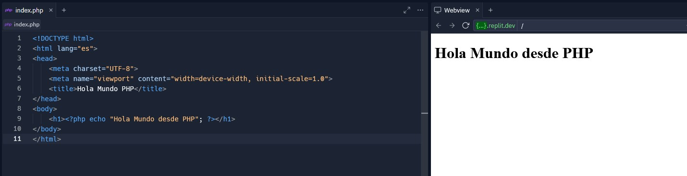
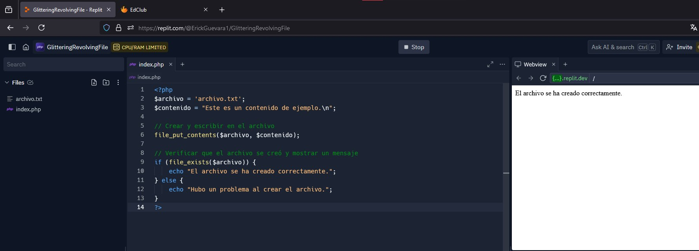

Práctica: Investigación de PHP
Resumen
En esta práctica/investigación se revisó el uso de PHP, un lenguaje de scripting utilizado principalmente en el desarrollo web para crear contenido dinámico.
Herramientas
- replit.com
- Investigaciones por internet
Desarrollo
Objetivo General
Obtener conocimientos básicos de PHP.
PHP
En esta sección se encuentra toda la información sobre PHP
¿Qué es el lenguaje PHP?
PHP (Hypertext Preprocessor) es un lenguaje de scripting del lado del servidor diseñado especialmente para el desarrollo web. Se puede incrustar en HTML para crear páginas web dinámicas.
¿Para qué sirve el lenguaje PHP?
PHP se utiliza para generar contenido dinámico, interactuar con bases de datos, gestionar sesiones y cookies, procesar formularios y datos del usuario, y realizar operaciones de autenticación y control de acceso.
¿Cuál es la diferencia entre los archivos HTML y PHP?
HTML es un lenguaje de marcado utilizado para estructurar y presentar contenido en la web. PHP es un lenguaje de scripting que se ejecuta en el servidor y puede generar contenido HTML dinámicamente.
¿Para qué sirve la etiqueta <?php ?>?
La etiqueta <?php ?> se utiliza para delimitar el código PHP dentro de un archivo. Todo el código dentro de estas etiquetas será interpretado y ejecutado por el servidor antes de enviar la salida al navegador.
¿Cuáles son los pasos y requisitos para cargar un archivo PHP en un servidor?
1. Instalar un servidor web como Apache.
2. Instalar PHP y configurarlo en el servidor.
3. Subir los archivos PHP al servidor.
4. Configurar permisos correctos para los archivos.
5. Acceder al archivo a través de la URL correspondiente en el navegador.
Programa básico “Hola mundo” con PHP
<!DOCTYPE html>
<html lang="es">
<head>
<meta charset="UTF-8">
<meta name="viewport" content="width=device-width, initial-scale=1.0">
<title>Hola Mundo PHP</title>
</head>
<body>
<h1><?php echo "Hola Mundo desde PHP"; ?></h1>
</body>
</html>
Este programa utiliza las etiquetas <?php ?> para incluir código PHP dentro de un archivo HTML. La función echo se usa para imprimir "Hola Mundo desde PHP" en la página web.
La siguiente imágen es como se ve en Replit.
Puedes consultar el código de Replit en el siguiente link.
¿Para qué sirve la función echo en PHP?
La función echo se utiliza para enviar datos a la salida estándar (generalmente el navegador web). Es utilizada para imprimir texto, variables y HTML desde un script PHP.
¿Cuál es la sintaxis de la programación en PHP?
La sintaxis de PHP es similar a la de otros lenguajes de programación como C, Java y Perl.
Diferencia y consideraciones especiales al utilizar caracteres en mayúsculas en PHP
En PHP, las palabras reservadas no distinguen entre mayúsculas y minúsculas, pero las variables sí. Es decir, $Variable y $variable se consideran variables diferentes.
¿Cómo se declaran variables en PHP?
Las variables en PHP se declaran con el símbolo $ seguido del nombre de la variable:
<?php
$miVariable = "Hola";
?>
¿Cómo se declaran funciones en PHP?
Las funciones se declaran utilizando la palabra clave function:
<?php
function miFuncion() {
return "Hola Mundo";
}
?>
¿Cómo se llaman funciones en PHP?
Las funciones se llaman por su nombre seguido de paréntesis:
<?php
echo miFuncion();
?>
¿Cuáles ciclos de programación están disponibles en PHP?
PHP ofrece ciclos como for, while, do...while, y foreach.
¿Cuáles funciones de condicional están disponibles en PHP?
PHP incluye condicionales como if, else, elseif, y switch.
Métodos reservados para el tratamiento de archivos en PHP
Algunos métodos incluyen fopen(), fclose(), fread(), fwrite(), file_get_contents(), file_put_contents(), y unlink().
Programa básico para crear un archivo de texto en el servidor
<?php
$archivo = 'archivo.txt';
$contenido = "Este es un contenido de ejemplo.\n";
// Crear y escribir en el archivo
file_put_contents($archivo, $contenido);
// Verificar que el archivo se creó y mostrar un mensaje
if (file_exists($archivo)) {
echo "El archivo se ha creado correctamente.";
} else {
echo "Hubo un problema al crear el archivo.";
}
?>
Este código funciona de la siguiente manera:
$archivo = 'archivo.txt';
$contenido = "Este es un contenido de ejemplo.\n";
Primero se declara una variable $archivo que contiene el nombre del archivo que se va a crear (archivo.txt).
Se declara una variable $contenido que contiene el texto que se escribirá dentro del archivo. El \n al final del contenido representa un salto de línea.
Después creamos el archivo.
file_put_contents($archivo, $contenido);
La función file_put_contents() se utiliza para crear un archivo y escribir contenido en él.
Si el archivo no existe, file_put_contents() lo crea; si ya existe, sobrescribe su contenido con el nuevo contenido proporcionado en la variable $contenido.
Por último verificamos que el archivo se creo correctamente.
if (file_exists($archivo)) {
echo "El archivo se ha creado correctamente.";
} else {
echo "Hubo un problema al crear el archivo.";
}
La función file_exists() se utiliza para verificar si el archivo especificado existe en el servidor.
Si el archivo existe, se imprime el mensaje "El archivo se ha creado correctamente.".
Si el archivo no existe, se imprime el mensaje "Hubo un problema al crear el archivo.".
La siguiente imágen es como se ve el código en Replit.
Puedes consultar el código de Replit en el siguiente link.
Método Open/Read en el manejo de archivos con PHP
<?php
$archivo = 'archivo.txt';
// Abrir el archivo en modo lectura
$fp = fopen($archivo, 'r');
// Leer el contenido del archivo
if ($fp) {
while (($linea = fgets($fp)) !== false) {
echo $linea . "<br>";
}
fclose($fp);
} else {
echo "No se pudo abrir el archivo.";
}
?>
Este script abre un archivo en modo lectura ('r') usando fopen, lee cada línea con fgets y la imprime. Finalmente, cierra el archivo con fclose.
Método Create/Write en el manejo de archivos con PHP
<?php
$archivo = 'nuevoArchivo.txt';
$contenido = "Contenido de ejemplo para escribir en el archivo.\n";
// Crear y abrir el archivo en modo escritura
$fp = fopen($archivo, 'w');
// Escribir contenido en el archivo
if ($fp) {
fwrite($fp, $contenido);
fclose($fp);
echo "El archivo se ha creado y escrito correctamente.";
} else {
echo "No se pudo crear o escribir en el archivo.";
}
?>
Este script crea y abre un archivo en modo escritura ('w') usando fopen, escribe contenido con fwrite, y cierra el archivo con fclose.
Ventajas de integrar PHP en una página web
- Interactividad: Permite crear páginas web dinámicas que responden a las interacciones del usuario.
- Integración con bases de datos: Facilita la conexión y manipulación de bases de datos.
- Flexibilidad: Puede incrustarse en HTML y combinarse con JavaScript, CSS y otros lenguajes.
- Amplia comunidad: PHP tiene una gran comunidad y abundante documentación.
- Compatibilidad: Funciona en la mayoría de los servidores web y sistemas operativos.
Conclusiones
El uso de PHP es ampliamente utilizado en el desarrollo web debido a su flexibilidad, capacidad de interacción con bases de datos, y amplia comunidad de soporte. Permite crear sitios web dinámicos e interactivos de manera eficiente.
Referencias
No hay referencias.
Descargables
No hay descargables.